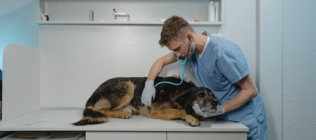

Join our efforts

Adopt
Rescue your new best friend
Find Out More
Foster
Experience the joy of fostering
Find Out MoreDonate
Help our effort to rescue homeless animals
Find Out More
Volunteer
Volunteers make our mission possible
Find Out MoreAdditional Info

Adopting
Our adoption process is fairly simple, but we do want to be sure that the animals that we have cared for and loved go to the best homes!
We will ask you a few questions to determine the suitability of your home for our dogs or cats. You will complete a questionnaire and we will complete an adoption contract.
Learn MoreFostering
There are so many reasons that we encourage everyone to foster. Fostering gives the animal you take into your home a second chance at life.
Shelter animals who are too young, ill or who require more socialization before adoption greatly benefit from being in foster care. Fostering is a very rewarding experience.
Learn More
Volunteering
Volunteers help the Yancey County Humane Society, care for, reunite and adopt hundreds of animals every year. We could not do what we do without our amazing volunteers!
We are looking for volunteers who want to make a difference in the lives of abandoned and orphaned animals in our care.
Learn More
Donating
Whether caring for strays found wandering the streets, rescuing neglected and abandoned animals, or saving dogs from the horrors of the puppy mill industry.
Our shelter is a safe haven for all animals and for some, a last resort.
Learn MoreOur Impact
4,358
pets found forever homes
78,215
vaccines given
16,541
pets spayed and neutered
1,795
animals treated for injury and illness
Make a donation
Support Yancey Humane Society
Find your pet
Special Offers
Low-cost Spay & Neuter Program
The YCHS has historically offered a low cost spay/neuter program. This program allows the general public to have their personal pets altered through an out-of-house service (the ASPCA Spay/Neuter Alliance in Asheville) that we provide transport to and from.
Sign upRabies Vaccination Clinic

The Yancey County Humane Society offers low-cost animal rabies vaccinations clinics for dogs and cats throughout the year. The next vaccination clinic will be held April 27th, 2024, at the YHS Animal Shelter, 211 Kind Hearts Way, Burnsville, NC from 10:00 am - 4:00 pm.
Learn more